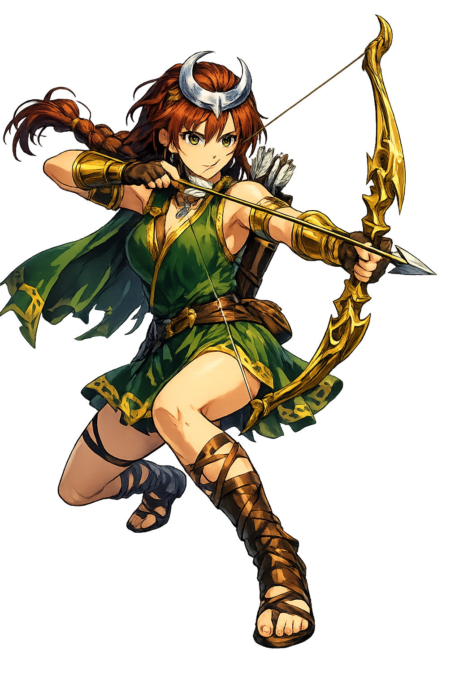

The Authentic Orthography
Goddess of the Hunt · Lady of the Moon · The Untamed

Why ártemis.com is the correct form
Ἄρτεμις
The name in its original Greek form. The rough breathing on the alpha, the acute rising sharp and clear. Three syllables spoken like an arrow leaving a bowstring — swift, decisive, irrevocable. She is the goddess who needs no long vowels. Her power is in the release.
ARTEMIS
Reduced to a space agency. A programming library. A wellness brand. The goddess who roams the wilderness with her pack of hounds, who turns men into stags for seeing her unclothed, who killed fourteen children in a single afternoon — reduced to a sanitized corporate name. The acute was not decoration. It was the notch on the arrow.
ártemis
The acute on the á restores the pitch accent — the rising note that makes the name a command. All vowels in Ártemis are short. There are no macrons. The accent is the only mark she needs. This is Tier‑2 — acute preservation without macrons. The name is complete at minimum density. Like the Huntress herself: nothing extra, everything essential.
ártemis.com → xn--rtemis-6ya.com
The non-ASCII character á (U+00E1) is encoded while the ASCII remains visible. To the DNS, it is Punycode. To humanity, it is Ártemis.
How the Huntress was truly spoken
Domains, symbols, and the law of the untamed
Ártemis is not the goddess of nature. She is the goddess of the wild. Nature can be cultivated, domesticated, shaped. The wild cannot. It simply is. Ártemis does not rule the forest. She belongs to it. She runs with wolves. She bathes in streams no mortal has found. She is the only Olympian who prefers the company of beasts to gods. She is not lonely. She is free.
Not mere killing — pursuit. The patience of the stalk. The precision of the shot. The respect for the prey. Ártemis hunts not for sport but for balance. She culls the herd. She removes the weak. She is nature's editor, cutting what does not serve the whole.
Not merely light in darkness — clarity in concealment. The moon reveals what the sun hides: the deer at the water's edge, the wolf on the ridge, the hunter's breath in cold air. Ártemis governs the night because she governs what is seen only in shadow.
Paradoxically, the virgin goddess is also the protector of women in labor. She who has never given birth assists every birth. She who has never known a man protects those who have. This is Ártemis's secret: she does not need to experience something to govern it. Her power is not personal. It is structural.
Ártemis swore eternal virginity — not from purity, but from sovereignty. To belong to no one. To answer to no one. Her nymphs swore the same oath. To break it was death. This is not prudishness. It is the refusal to be owned. The wild cannot be tamed. Neither can she.
Stories of boundaries, consequence, and absolute precision
Lētō, pregnant with twins, was pursued by Hēra's curse — no land would give her shelter. She finally found Dēlos, a floating island. There, Ártemis was born first. Then Lētō went into labor with Apollōn. But the birth was difficult. Nine days. Nine nights. No progress. Ártemis, barely hours old, delivered her own brother. She is the only god who was a midwife before she was a huntress. The wild protects life before it takes it. This is the order of things.
Actaeon, a hunter, stumbled upon Ártemis bathing in a forest pool. He saw her. She saw him seeing her. She did not scream. She did not flee. She simply transformed him. Antlers burst from his skull. His hounds — his own dogs, trained by his own hand — did not recognize him. They tore him apart. His screams echoed through the forest until they stopped. This is the law of the wild: boundaries are absolute. Cross them, and you become prey.
Niobe, queen of Thebes, had fourteen children — seven sons, seven daughters. She mocked Lētō for having only two. Lētō wept. Ártemis and Apollōn did not. They descended from Olympus with bows drawn. Ártemis killed the seven daughters. Apollōn killed the seven sons. Niobe watched all fourteen die. Then she wept until the gods turned her to stone — and the stone still weeps. This is Ártemis's justice: mock a mother's pain, and lose what you love most.
Orion was a giant, a hunter, and Ártemis's closest companion. They hunted together across the wilderness. Some say he tried to violate her, and she killed him. Others say Apollōn, jealous of their bond, tricked her into shooting him — pointing to a distant speck in the sea and betting she could not hit it. She fired. The speck was Orion's head. She placed him among the stars. Either way, the result is the same: the hunter becomes the hunted, the companion becomes the constellation. Ártemis does not keep what she cannot protect.
Apollōn illuminates. Árēs destroys. Athēnā strategizes. But Ártemis simply acts. She does not debate. She does not hesitate. She sees, she nocks, she releases. Her twin brother governs prophecy — the knowledge of what will be. She governs the hunt — the moment when knowledge becomes action. He speaks. She strikes.
This is not a directory. This is a resurrection.
Enter the CodexSee how Ártemis behaves in the PUNYCODEX Type Tool — with predictive autocomplete, character-by-character breakdown, and scholarly constraint validation.
artemis
→
Ártemis